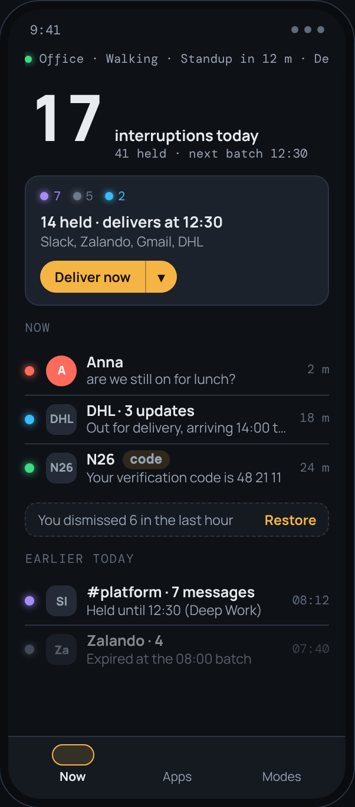
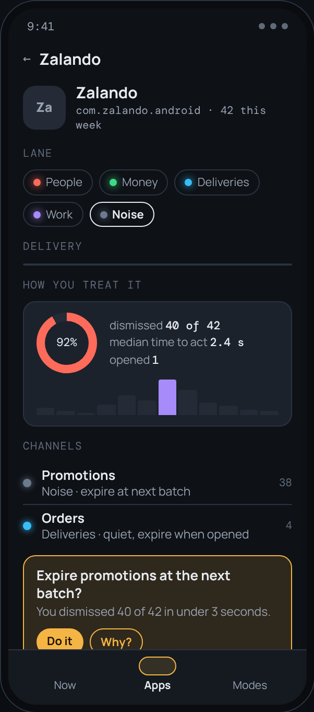
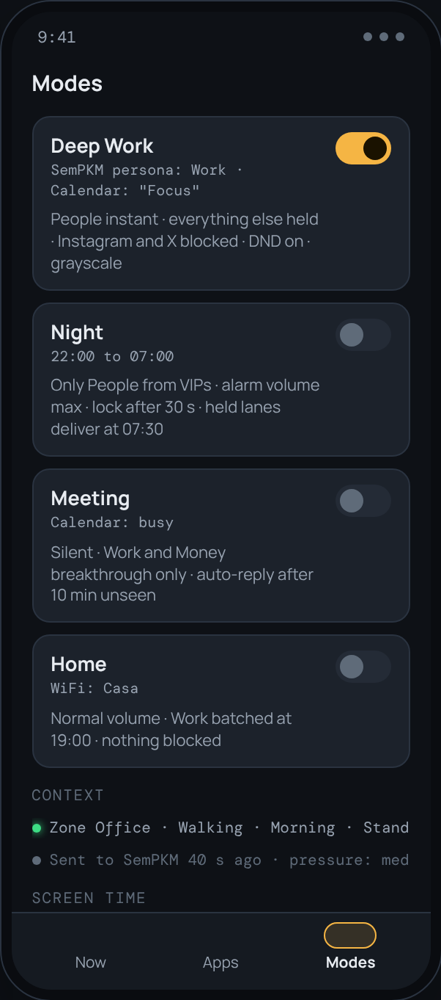
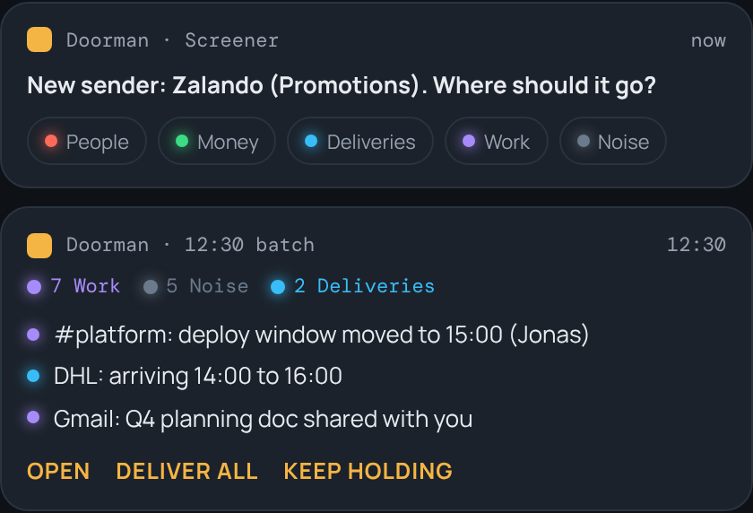

Doorman stands between the world and you. It lets the right notifications through immediately, holds the rest until you ask, and remembers everyone who came by.

Every notification belongs to a lane. Lanes have a colour, a delivery policy and a decay rule, so your phone stops treating a delivery update like a message from your partner.
User-defined buckets with a colour and a delivery policy. A LED-dot motif makes the lane readable at a glance, anywhere in the app.
The first time a new sender shows up, Doorman asks where it should go. One answer, routed forever. Keyword exceptions can still punch through.
Held lanes are batched at times you choose, with bounded deferral so nothing waits forever. Instant lanes are never touched.
Nothing is lost. Every removal is archived with a reason, with undo, restore, search and keyword pages.
Presets such as Deep Work, Night, Meeting and Home change lanes, block distracting apps with friction instead of walls, and set sound and Do Not Disturb.
Per-app limits with advisory, soft and hard enforcement, so a pause before opening an app is a choice you made.
Everything in Doorman is per app, and everything is a policy. The shell reflects that: Now, Apps and Modes, with Settings behind a gear.



Outside the app, Doorman shows up in exactly two places: the Screener, when a new sender appears, and the batch summary, at delivery time. That's the whole interface to the world.
These are design previews rendered from the project's redesign review (in the repo), not captures from a device. They show where v0.3 is heading; the current build is v0.2.
Built for personal use first. Everything is stored on the device, and notification content never leaves it.
Doorman is not on an app store yet. Build the debug APK from source and sideload it. You'll need JDK 17 and the Android SDK; the README walks through setup, including a Docker build.
git clone https://github.com/MetaCoding-io/AndroidUsageControl cd AndroidUsageControl ./gradlew assembleDebug